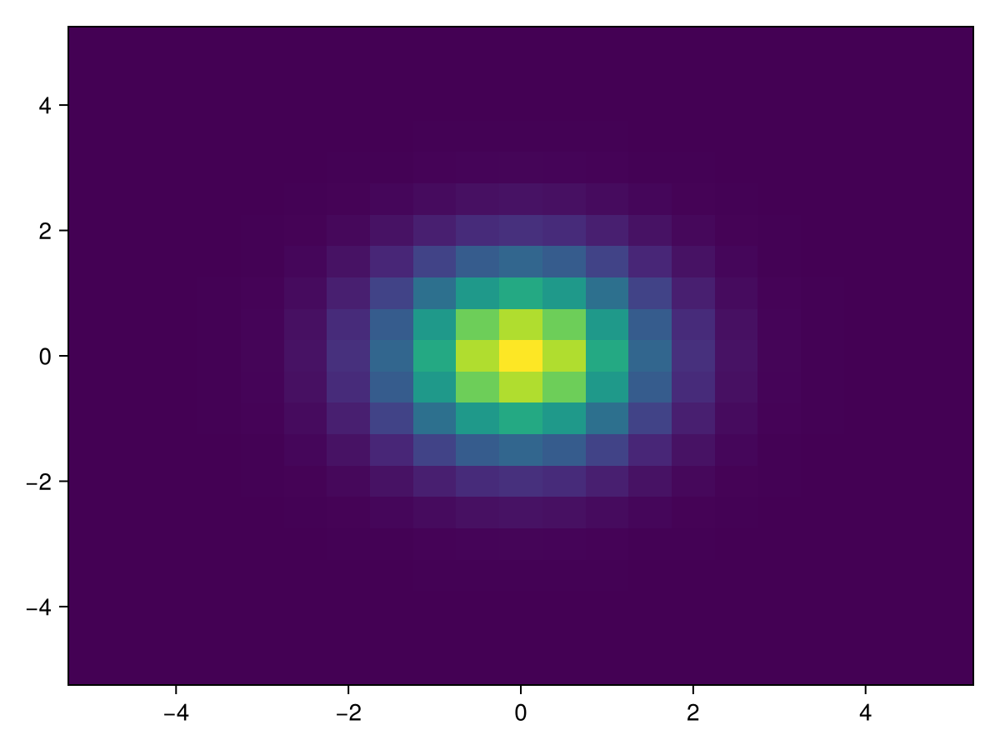
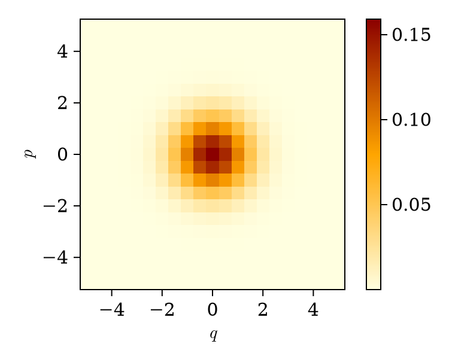

Tutorials
Visualizations
Quasiprobability distributions of Gaussian states can be visualized with Makie.jl. Gabs.jl currently has support for the following distributions, which can be called with the keyword argument dist:
Below is a code example that plots the wigner distribution of a vacuum state:
using Gabs, CairoMakie
basis = QuadPairBasis(1)
state = vacuumstate(basis)
q, p = collect(-5.0:0.5:5.0), collect(-5.0:0.5:5.0) # phase space coordinates
heatmap(q, p, state, dist = :wigner)
Of course, more plotting sugar can be added to this example with internal Makie attributes:
using Gabs, CairoMakie
basis = QuadPairBasis(1)
state = vacuumstate(basis)
q, p = collect(-5.0:0.5:5.0), collect(-5.0:0.5:5.0) # phase space coordinates
fig = Figure(fontsize=15, size = (375, 300), fonts = (; regular="CMU Serif"))
ax = Axis(fig[1,1], xlabel = L"q", ylabel = L"p")
hm = heatmap!(ax, q, p, state, dist = :wigner, colormap = :heat)
Colorbar(fig[1,2], hm)
fig
Using Custom Arrays
Types such as GaussianState, GaussianUnitary, and GaussianChannel are agnostic array wrappers, so they can hold any custom array that exists in the Julia ecosystem. Operations in Gabs.jl preserve these custom array types, provided they follow the AbstractArray interface.
Let's explore this feature in detail, using StaticArrays.jl and SparseArrays.jl as a case study. To create a coherent state that wraps around pure Julia arrays, the function coherentstate can be called with a single complex argument:
julia> coherentstate(QuadPairBasis(1), 1.0-im)
GaussianState for 1 mode.
symplectic basis: QuadPairBasis
mean: 2-element Vector{Float64}:
1.4142135623730951
-1.4142135623730951
covariance: 2×2 Matrix{Float64}:
1.0 0.0
0.0 1.0Here, a GaussianState object containing a Vector{Float64} of size two (mean vector) and a Matrix{Float64} of size two by two (covariance matrix) was initialized. If we want to potentially optimize and boost the performance of our code, then one approach would be to wrap our GaussianState around different array types, for instance, an SVector from StaticArrays.jl or a SparseVector from SparseArrays.jl. Any defined method in Gabs.jl that (i) creates a custom type or (ii) transforms a custom type can specify an array type in its first (and second) arguments. Let's see an example with StaticArrays.jl:
julia> using StaticArrays
julia> state = coherentstate(SVector{2}, SMatrix{2,2}, QuadPairBasis(1), 1.0-im)
GaussianState for 1 mode.
symplectic basis: QuadPairBasis
mean: 2-element SVector{2, Float64} with indices SOneTo(2):
1.4142135623730951
-1.4142135623730951
covariance: 2×2 SMatrix{2, 2, Float64, 4} with indices SOneTo(2)×SOneTo(2):
1.0 0.0
0.0 1.0
julia> tp = state ⊗ state
GaussianState for 2 modes.
symplectic basis: QuadPairBasis
mean: 4-element SVector{4, Float64} with indices SOneTo(4):
1.4142135623730951
-1.4142135623730951
1.4142135623730951
-1.4142135623730951
covariance: 4×4 SMatrix{4, 4, Float64, 16} with indices SOneTo(4)×SOneTo(4):
1.0 0.0 0.0 0.0
0.0 1.0 0.0 0.0
0.0 0.0 1.0 0.0
0.0 0.0 0.0 1.0
julia> using SparseArrays
julia> ptrace(SparseVector, SparseMatrixCSC, tp, 1)
GaussianState for 1 mode.
symplectic basis: QuadPairBasis
mean: 2-element SparseVector{Float64, Int64} with 2 stored entries:
[1] = 1.41421
[2] = -1.41421
covariance: 2×2 SparseMatrixCSC{Float64, Int64} with 2 stored entries:
1.0 ⋅
⋅ 1.0Importantly, methods that create or manipulate a Gaussian state, such as tensor and ptrace, preserve array types, but can also opt for a different array type.
If you have an array wrapper that initializes both vectors and matrices, then you can specify the array type with a single argument. For instance, to initialize a state that contains Arrays holding numbers of type Float32 rather than Float64, simply pass Array{Float32} to any relevant Gabs.jl method:
julia> state = displace(Array{Float32}, QuadPairBasis(1), 1.0-im)
GaussianUnitary for 1 mode.
symplectic basis: QuadPairBasis
displacement: 2-element Vector{Float32}:
1.4142135
-1.4142135
symplectic: 2×2 Matrix{Float32}:
1.0 0.0
0.0 1.0